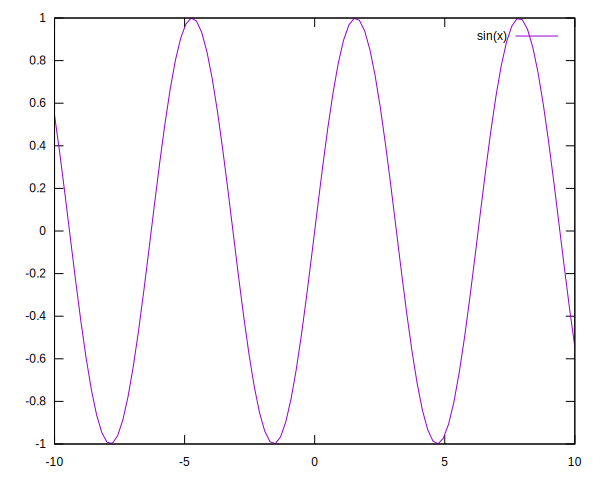
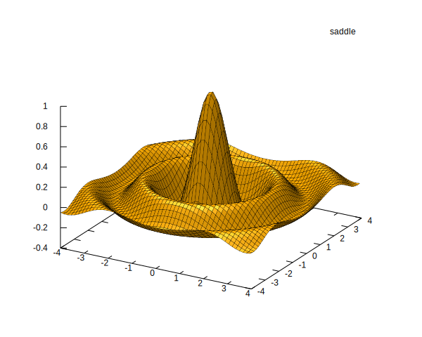

Introduction to GnuplotLite.jl
This module is a Julia wrapper for Gnuplot. This has the following design goals:
- Responsiveness: this should be the thinnest of possible wrappers. The biggest drag to plotting in Julia is the number of lines of code that sit in between the programmer and the plotter.
- Composability: it should be easy to extend
GnuplotLite. - Transparency: it should be easy to reason about how data is entered into Gnuplot.
That being said, there are so many plotting packages in Julia. When should you use this?
- Use
GnuplotLiteif you are in love with Gnuplot and want nothing to sit in between you and it.
Alternatives
Plotting in Julia is a notoriously hard problem. Why? A core issue with many plotting packages in Julia is that these packages become too big, and then compiling all the necessary code makes things slow. So the problem is a combination of the one-shot nature of plotting and the complexity of the packages involved.
A related problem with plotting packages in any language, is that two problems get conflated: data analysis and visualization. This makes for very nice interfaces a la GGPlot (which I find brilliant), however, on the implementation side this needlessly complicates things. The focus on visualizing data-frames has left it very hard to work with grid based data in most modern packages (plotly, ggplot, vegalite, bokeh, you name it).
Plots.jlis a large package that provides a uniform interface over a lot of backends. I have recently triedPlotswith the most recommended backends:GR,Plotly,Pyplot,Gaston. TheGRbackend worked really well, but it was really hard to tweak the output towards publication quality. In other words, plotting was relatively fast but hideous to the limit of being buggy. All the other backends that I tried gave me installation issues.Gadfly.jllooks very promising, but is very slow to respond with larger data sets.Gnuplot.jlis a thin wrapper around Gnuplot. My problem with this package is that it focusses heavily on use with a macro@gp. Because of this, code inGnuplot.jlsuffers from a lack of composability. It is also not so straight forward to see exactly how@gpcode translates tognuplotcommands when arrays are used.Gaston.jlis a slightly thicker wrapper around Gnuplot, mirroring Gnuplot syntax in Julia functions. I could not make it work.
Tutorial
Start a Gnuplot session by running gnuplot(). Then send it messages using |> send(...).
using GnuplotLite
g = gnuplot()
g |> send("plot sin(x)")
close(g)Note that using gnuplot() this way may leave the actual Gnuplot process dangling. There is do-notation to prevent that:
gnuplot() do g
g |> send("plot sin(x)")
endMessages can be composed:
using GnuplotLite
setup(output) =
send("set term svg background 'white'") *
send("set output '$output'")
gnuplot() do g
g |> setup("sine.svg") |> send("plot sin(x)")
end
You may enter data into Gnuplot by sending Pair. This gets translated into an inline data definition.
settings = """
set pm3d lighting primary 0.5 specular 0.3
set pm3d depthorder border lc 'black' lw 0.3
set style fill solid 1.00 noborder
set ticslevel 0
unset colorbox
"""
x = -4:0.15:4
y = x
z = sinc.(sqrt.(x.^2 .+ y'.^2))
plot = setup("sinc3d.svg") *
send(settings) *
send("data" => (x=x, y=y, z=z)) *
send("splot \$data nonuniform matrix " *
"using 1:2:3:(0xffad00) t'saddle' " *
"with pm3d lc rgb variable")
gnuplot() |> plot |> closeWarning: empty cb range [1.6756e+07:1.6756e+07], adjusting to [1.65884e+07:1.69235e+07]
Under the hood
There are two objects in GnuplotLite: the Gnuplot instance and Msg. The Gnuplot instance contains a channel to which you can send Gnuplot commands. A Msg contains a function of type ::Gnuplot -> ::Gnuplot that then actually sends the commands to the channel. By abstracting the messages into a function we can stay efficient while being fully composable. Because of the composability we can easily extend GnuplotLite to interact with data the way you want.